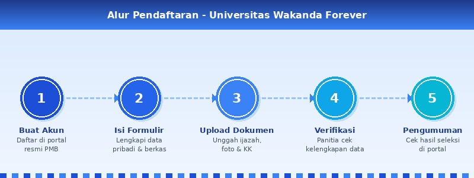

Alur Pendaftaran Mahasiswa Baru
Berikut adalah langkah-langkah yang harus dilakukan oleh calon mahasiswa baru untuk mengikuti seleksi penerimaan mahasiswa baru:

- Kunjungi portal PMB Universitas Wakanda Forever dan buat akun pendaftaran baru menggunakan email aktif.
- Isi formulir biodata diri secara lengkap dan benar sesuai dokumen kependudukan (KTP/KK).
- Unggah dokumen persyaratan yang dibutuhkan: ijazah/SKHUN, pas foto terbaru, dan kartu keluarga.
- Pilih jalur pendaftaran yang sesuai: Gelombang 1 atau Gelombang 2.
- Kirimkan formulir pendaftaran dan simpan nomor bukti pendaftaran yang diberikan sistem.
- Tunggu proses verifikasi berkas oleh panitia seleksi (berlangsung 10 hari kerja).
- Cek pengumuman hasil seleksi pada tanggal yang telah ditentukan di halaman pengumuman.
- Jika dinyatakan lolos, lakukan daftar ulang sesuai jadwal yang telah ditetapkan.